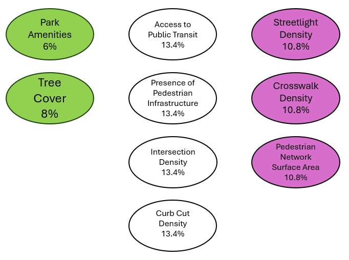
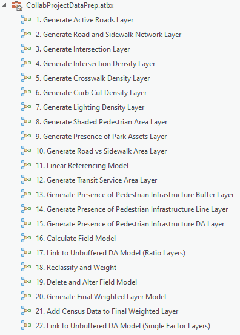

Methodology
Overview
The client had originally requested several static maps, an ArcGIS Dashboard, and an ESRI file geodatabase to showcase how walkable different areas of the city are, with the intent to use this information for planning purposes and the development of for future projects. After speaking with the client, the team at STAC Enterprises also decided to include an ArcGIS StoryMap and a survey deployed with Survey123. The former is intended to showcase the index and its underlying components in a more in-depth and easy-to-pick-up manner, while the latter is intended to help field crews to document the presence and quality of assets associated with walkability.
Walkability Index and Models
In consultation with the client, a list of walkability factors was generated as well as a formula by which to calculate them. The list of factors is as follows:
- Park Amenities vs. Population (Park Amenities Density)
- Road Length within 400m of Transit vs. Total Road Length (Access to Transit)
- Streetlights vs. Road Length (Streetlight Density)
- Length of Roads That Contain Two Sidewalks vs. Road Length (Proportion of Roads with Two Sidewalks)
- Crosswalk Density vs. Arterial /Collector Length (Crosswalk Density)/li>
- Curb Cuts vs. Intersections (Curb Cut Density)
- Pedestrian Network Area vs. Road Network Area (Pedestrian Network Surface Area)
- Intersections vs. Road Length (Intersection Density)
- Vegetation Cover Area vs. Pedestrian Network Area (Shaded Pedestrian Area)
The necessary data was obtained (from the client and elsewhere), extracted, and used to calculate an unweighted ratio between the two subfactors. The ratios were then classified on a one-to-five scale and that classification value was weighted using values that were generated using an AHP (analytic hierarchy process). As can be seen in the image below, comfort factors (green) were weighted lower than safety factors (purple), and both were weighted lower than accessibility factors (white).
Modelbuilder
ModelBuilder was a critical aspect of this project, as the Toolbox allows for our clients to repeat the processes that underwent the creation of the the index at a later date.
Walkability Map of Peterborough
After calculating all the layers together in ArcGIS Pro, the final layer was brought into Adobe Photoshop to be visualized